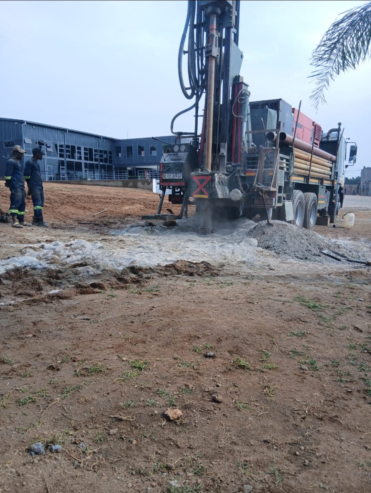
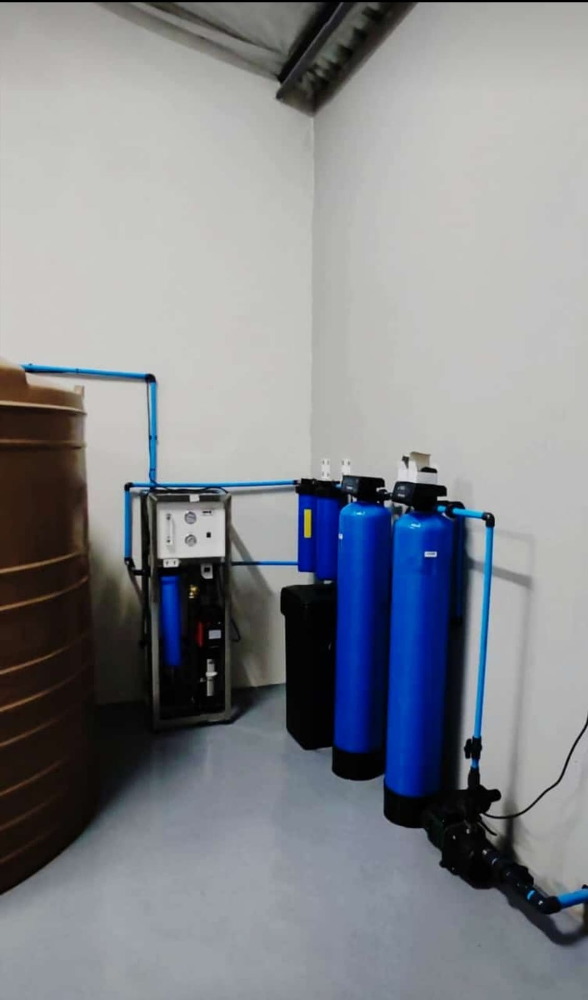
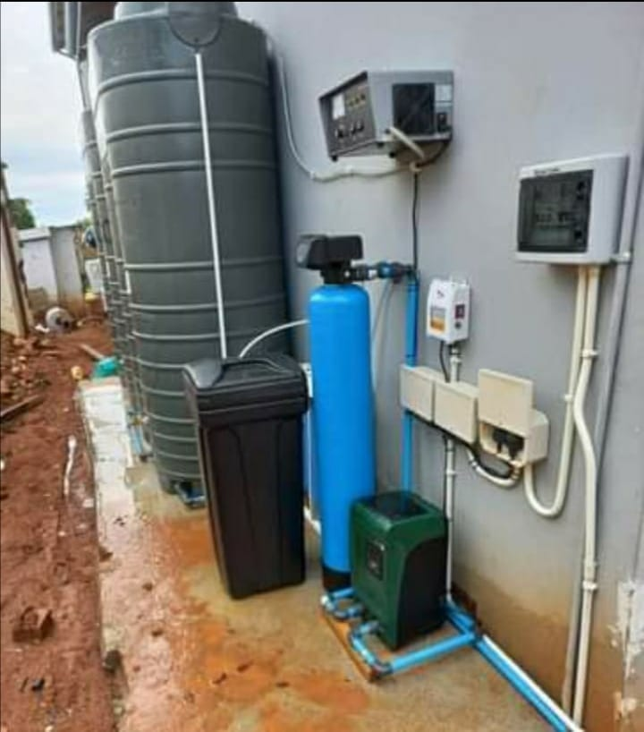
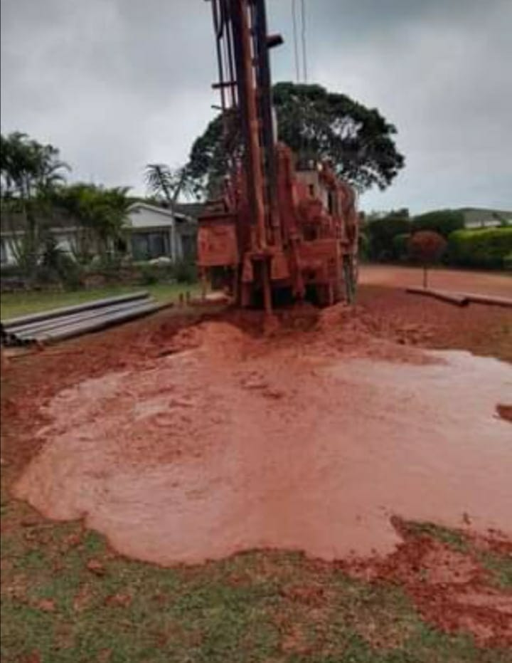
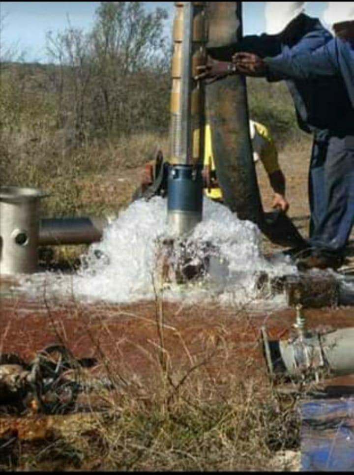
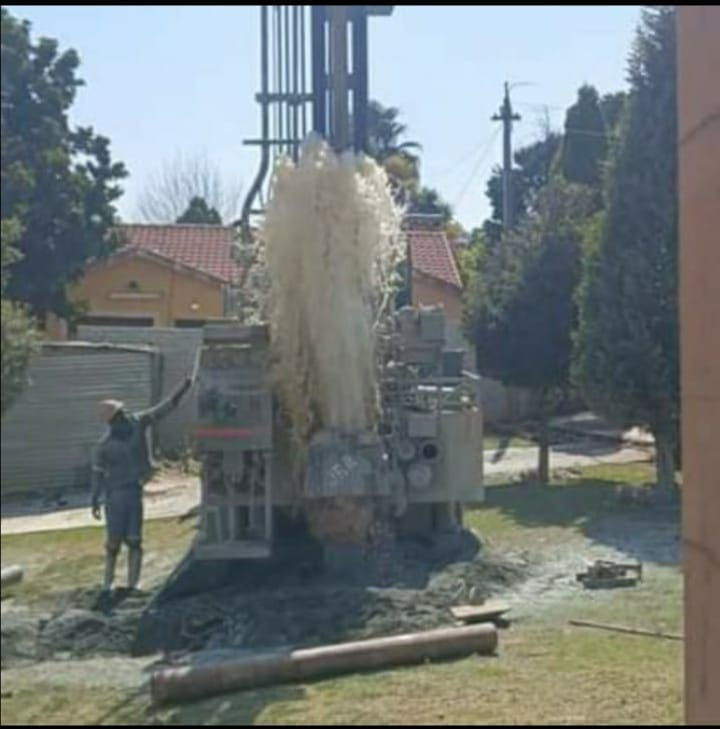

Our Borehole Services
Everything you need — from finding water to keeping it flowing. All seven services, done professionally and affordably.
Borehole Drilling
Getting water from the ground is what we do best. Our borehole drilling service is fast, professional and reliable — whether you're on a residential property, a farm, a smallholding, or a commercial site.
We bring the right equipment for your ground conditions and work efficiently to minimise disruption to your property.
- Site assessment and planning
- Professional drilling with modern rigs
- Borehole casing and sanitary seal
- Yield testing on completion
- Full handover report and documentation
Who it's for: Homeowners, farmers, smallholdings, estates, businesses, schools — anyone who needs a reliable private water supply.
Quote for Borehole Drilling
Borehole Installations
Drilling the borehole is just the beginning. A proper installation is what turns a hole in the ground into a reliable water supply. We handle the full setup — pumps, pipework, electrical connections, control panels and filtration — so everything works together perfectly from day one.
- Submersible pump selection and installation
- Electrical connection and control panel
- Pipework from borehole to point of use
- Water filtration and treatment systems
- Jojo tank integration (if required)
- System testing and commissioning

Borehole Maintenance
Like any piece of equipment, your borehole and pump system needs regular attention to perform at its best. Our maintenance service keeps your water flowing reliably and helps you avoid costly emergency repairs down the line.
- Pump inspection and servicing
- Water quality checks and testing
- Electrical system check
- Borehole integrity inspection
- Filter and media replacement
- Troubleshooting and repairs on the spot
Tip: Regular maintenance is far cheaper than an emergency call-out. Contact us to set up a maintenance schedule for your property.
Book Maintenance
Water Survey
Before you drill, it makes sense to know where the water is. Our water survey service uses specialist methods to identify the most promising locations and estimated depths on your property — dramatically improving your chances of a successful, productive borehole.
- Geophysical survey of the site
- Identification of optimal drilling point(s)
- Estimated depth and expected yield guidance
- Survey report with recommendations
- Guidance on drilling viability
Smart move: A water survey is a small investment that can save you from drilling in the wrong place. We always recommend one before starting a new borehole.
Enquire about Water Survey
Pump Repairs
When your borehole pump stops working, every hour without water counts. Our pump repair service is fast, professional and affordable. We diagnose the problem quickly and fix it right the first time — getting your water back on without unnecessary delays or surprise costs.
- Pump removal and inspection
- Fault diagnosis and assessment
- Repair or pump replacement (with options)
- Electrical cable checks and repairs
- Reinstallation and testing
Common problems we fix: No water output, low pressure, pump running but no water, tripped electrical, noisy pump, damaged cable.
Get a Pump Repair Quote
Borehole Pumps
Choosing the right pump is critical to getting the most out of your borehole. We supply and install quality submersible borehole pumps sized to match your water yield, borehole depth and household or farm water demands.
- Expert pump selection advice
- Supply of quality submersible pumps
- Professional pump installation
- Pump cable and control panel connection
- Flow and pressure testing
Need a replacement pump? We carry a range of pump sizes and can usually supply and install on the same trip.
Enquire about Pumps
Jojo Tanks
A Jojo tank is the perfect partner for your borehole. It stores water so you always have a reserve — even if the power goes out, the pump trips, or demand is high. We supply and install Jojo tanks of various sizes, integrated with your borehole system for seamless operation.
- Range of tank sizes to suit your needs
- Professional installation and plumbing
- Integration with existing borehole pump
- Level control and overflow management
- Filtration system connection (if applicable)
Homes, farms & businesses: Whether you need a small backup tank for a home or multiple large tanks for a farm, we size and install it correctly.
Enquire about Jojo Tanks
Frequently Asked Questions
Honest answers to the questions we get asked most often.